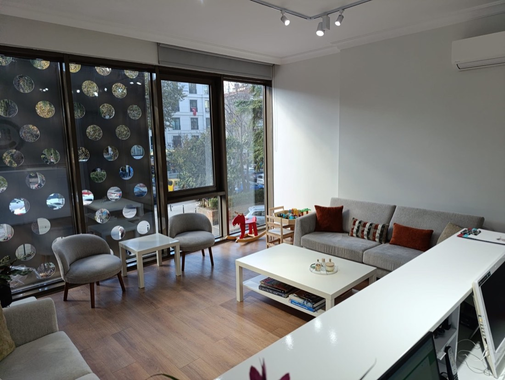
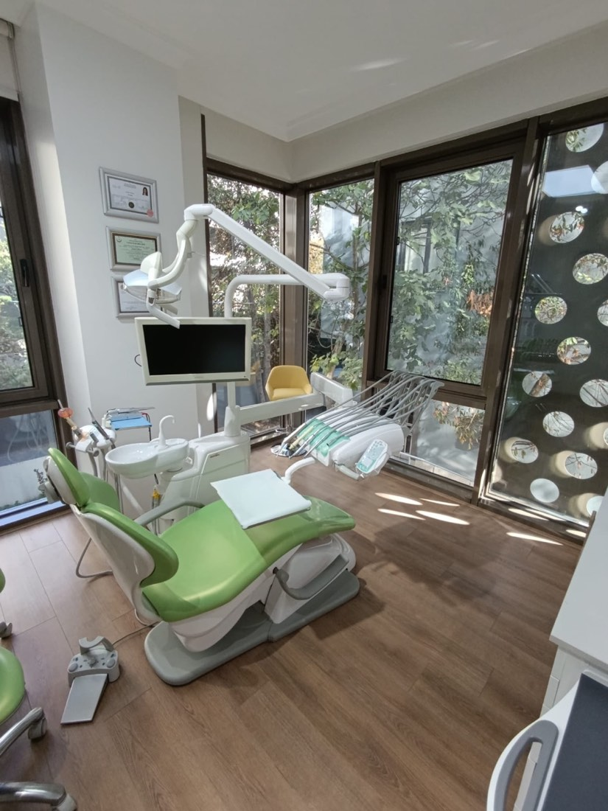
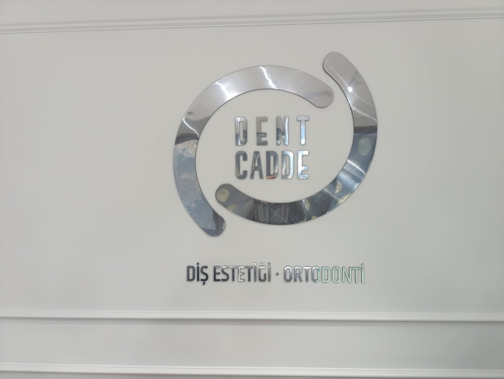

Profesyonel Yardım
Uzman ekibimiz size en iyi tedavi seçeneklerini sunar, sağlığınızı ön planda tutar.
Sağlıklı dişler hem estetik bir görünüm sağlar hem de genel sağlığı koruyarak yaşam kalitenizi artırır. Profesyonel ve güncel diş hekimliği tedavi yaklaşımlarımız ile en iyi ağız ve diş sağlığı hizmeti almanız için buradayız.
Dr. Aslıhan Yıldırım Türkmen, 1985 Tekirdağ doğumlu olup Ümraniye Anadolu Lisesi mezunudur. İstanbul Üniversitesi Diş Hekimliği Fakültesi'nde lisans eğitimine başlamış; 2007 yılında üniversite eğitimini tamamlamıştır.
2007 yılında İstanbul Üniversitesi Sağlık Bilimleri Enstitüsü Ortodonti Anabilim Dalı'nda doktora eğitimine başlayan hekim, 2013 yılında "Clear Aligner Apareyinin Etkinliğinin Belirlenmesi" adlı tezini sunarak doktora eğitimini tamamlamıştır.
Yurt içi ve yurt dışında düzenlenen birçok bilimsel kongre ve sempozyumda katılımcı ve konuşmacı olarak yer almıştır. Deneyimlerini ihtiyacı olan hastalar ile paylaşabilmek amacıyla 2020 yılında kendi muayenehanesini açmıştır.
Ortodontiden implanta, çocuk diş hekimliğinden evde tedaviye kadar 19 alanda kapsamlı ağız ve diş sağlığı hizmeti. Ayrıntısını okumak istediğiniz tedaviye dokunun.
Dr. Aslıhan Yıldırım Türkmen Diş Estetiği ve Ortodonti Kliniği, 2020 yılında diş estetiği ve ortodonti alanında uzman Dr. Aslıhan Yıldırım Türkmen tarafından kuruldu. Vizyonu, modern diş hekimliğinde güncel ve kanıta dayalı tedavileri bir araya getirerek hastalara en güvenilir diş tedavisini sunmaktır.



Düzenli takip edilen muayeneler ile ağız diş sağlığının en üst seviyede korunmasını sağlıyoruz.
Gülüş tasarımı (Smile Design), diş estetiği, seramik (porselen) lamina veneer, full estetik kuron, zirkonya restorasyonlar, porselen dolgu, diş beyazlatma gibi güncel diş estetiği materyalleri ile hazırlanan tedavi yaklaşımları uyguluyoruz.
Çene, yüz ve diş bozukluklarının çocukluktan erişkinliğe kadar her yaşta düzeltilmesine yardımcı oluyoruz.
Kaybedilen dişlerinizi geri kazanmanız için güvenilir ve kalıcı implantlar ile estetik ve fonksiyonel diş tedavisi seçenekleri sunuyoruz.
Tedavi için başvuran hastaların bireysel ağız diş sağlığı ihtiyaçlarına yönelik, alanında uzman ve profesyonel diş hekimlerinden oluşan ekibimiz uygun, güncel ve bilimsel tedaviyi uygulamaktadır.
Uzman ekibimiz size en iyi tedavi seçeneklerini sunar, sağlığınızı ön planda tutar.
Tedavilerimiz sonuç odaklıdır ve en iyi sonuçları almanız için çalışırız.
Diş sağlığınızın sürekliliğini sağlamak adına her zaman yanınızdayız.
Estetik ve işlevselliği bir araya getiren diş tedavileri ile sağlıklı ve çekici bir gülüşe kavuşabilirsiniz.
Diş sağlığınızı riske atmamak için acil durumlarda hızlı çözümler sunuyoruz.
Tedavilerimizde en güncel teknikleri kullanarak size güvenli ve kalıcı çözümler sunuyoruz.
Muayenehanemiz Doktortakvimi uygulaması ile de anlaşmalıdır; randevu al butonuna tıklayıp dilediğiniz saate randevunuzu kendiniz oluşturabilirsiniz.
5 yıldır hizmet veriyoruz ve bizi ve hizmetlerimizi seven harika hastalarla çalıştık. Kliniğimizle ilgili tüm değerlendirmelere aşağıdaki bağlantılardan ulaşabilirsiniz.
Benim diş hekimi fobimi yenmemi sağlayan tek yer! Artık hiç korkmuyorum! %100 güveniyorum. Dişi kurtarmak için her yolu denediklerini biliyorum. Ayrıca asla ihtiyacınız olmayan şeyler önermezler. Tüm ailem de Dent Cadde'yi tercih ediyor ve onlar da çok memnunlar. Diş hekimliğinde doğru adres kesinlikle DentCadde!
Güler yüzlü, profesyonel ve tecrübeli bir hizmet için güvenle gidebilirsiniz. Çocuğumun ortodonti tedavisini burada yaptırdık, ayrıca yetişkin olarak bizler de ne zaman ihtiyaç duysak Dent Cadde'ye gidiyoruz. Tavsiye ederiz 🌷
Dent Cadde, diş sağlığı konusunda şimdiye kadar karşılaştığım en profesyonel ve güvenilir kliniklerden biri! Tüm çalışanlar inanılmaz bilgili, deneyimli ve hastalarına karşı son derece ilgili. Tedavi sürecini detaylarıyla anlatması, her aşamada sizi rahatlatması ve mükemmel sonuçlar elde etmesi gerçekten takdire şayan.
Emin ellerde olmak istiyorsanız kesinlikle tercih edilmesi gereken bir yer.
Uzman hekimlerimizden randevu alıp gülüşünüzü geri kazanmak için ilk adımı atın.
Formu doldurmanız yeterli: ön bilgilendirmenize göre ilgili personelimiz en kısa sürede sizi arayıp randevunuzu oluşturacaktır. Dilerseniz doğrudan arayabilir ya da WhatsApp'tan yazabilirsiniz.